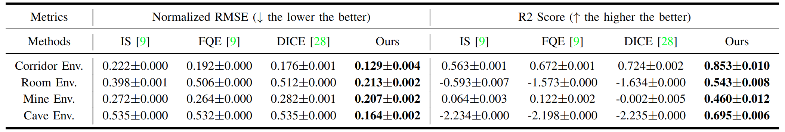

Abstract
Autonomous exploration has many important ap-
plications. However, classic information gain-based or frontier-
based exploration only relies on the robot current state to
determine the immediate exploration goal, which lacks the
capability of predicting the value of future states and thus
leads to inefficient exploration decisions. This paper presents a
method to learn how “good” states are, measured by the state
value function, to provide a guidance for robot exploration
in real-world challenging environments. We formulate our
work as a off-policy evaluation (OPE) problem with offline
Monte-Carlo training on real-world data and perform Temporal
Difference (TD) online adaptation to optimize the trained value
estimator. We also design an intrinsic reward function based on
sensor information coverage to enable the robot to gain more
information with sparse extrinsic rewards. Results demonstrate
that our method enables the robot to predict the value of future
states so as to better guide robot exploration. The proposed
algorithm achieves better prediction performance compared
with other state-of-the-art OPE methods. To the best of our
knowledge, this work for the first time demonstrates value
function prediction on real-world dataset for robot exploration
in challenging subterranean and urban environments.
Robot Explores with Learned Value Function
Results
In Corridor Environment
With the learned value function, robot could make better decisions.
In Cave Environment
Method Overview

Our method consisits of offline learning and online adaptation.
Quantative Results

We compare our approach with other SOTA OPE methods.
BibTeX
@article{2022opeexp,
author = {Yafei Hu and Junyi Geng and Chen Wang and John Keller and Sebastian Scherer},
title = {Off-Policy Evaluation with Online Adaptation for Robot Exploration in Challenging Environments},
journal = {https://arxiv.org/abs/2204.03140},
year = {2022},
}